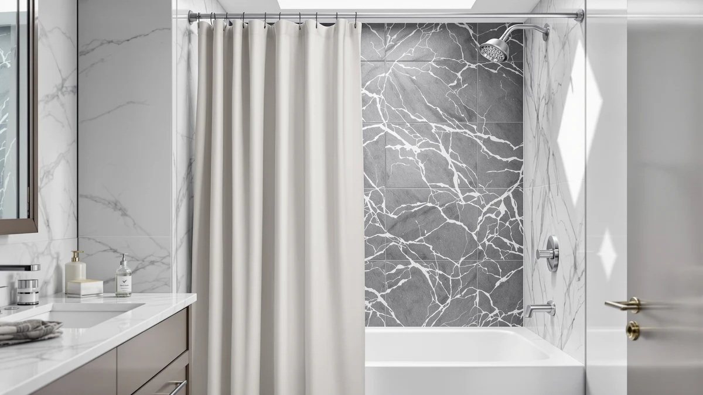

The Best Shower Curtains For stand-up showers (2026)
Prices and picks verified as of August 2026. Independent, reader-supported reviews.


Quick Answer
The best shower curtains for stand-up showers are sized to clear a stall without dragging and built from water-resistant material, so you don't need a separate liner. Our pick is the BigFoot Shower Curtain – 72 ($12.99), a 72 by 72 inch polyester and PEVA curtain sized for a straight stall rod. If you want a curtain that clips on without rings, the Mrs Awesome and SORTTO hookless curtains both install in seconds.
Our pick: BigFoot Shower Curtain – 72, $12.99 Check Price on Amazon
Bottom line: our top pick is the BigFoot Shower Curtain at $12.99. The best budget option is the Clorox Shower Curtain Liner & Hooks at $14.15.
Things to Know Before You Buy
- A stand-up shower has no tub lip to catch overspray, so the best shower curtains for stand-up showers need enough length to nearly reach the floor without dragging in the water below.
- Stall curtains typically run 70 to 74 inches wide and 72 to 74 inches long, sized to a single straight rod rather than the curved wraparound rods made for alcove tubs.
- A hookless curtain clips straight onto the rod and sits closer to it, which cuts down on the gap where water sprays past the edge of a narrow stall.
- Polyester and PEVA blends resist water on their own, so many stall curtains skip a separate liner. Check the material before you buy if you want that one-curtain setup.
- Hem weights or magnets matter more in a stall than in a tub-shower combo, since there is no tub wall to block the airflow that pulls a light curtain in against your legs.
The best shower curtains for stand-up showers have to solve a problem alcove tub curtains never face: sealing a straight-sided stall with no tub wall to catch overspray. A curtain cut for a wraparound tub rod often hangs wrong on a stall's straight bar, leaving gaps at the edges or dragging on the shower floor. We looked at curtains built specifically for that narrower, straighter shape, from simple water-resistant panels to hookless designs that clip onto the rod without extra hardware.
For most stalls, the BigFoot Shower Curtain – 72 is the one to buy. At $12.99, it is a 72 by 72 inch polyester and PEVA curtain sized to hang alone in a standard stand-up shower without a separate liner behind it. If you want a heavier textured look, the Madison Park Waffle curtain steps up the price for a hotel-style weave, and if your stall fights mildew more than most, the Clorox liner is worth adding regardless of which curtain you pick.
We also compared two hookless options, the Mrs Awesome and the SORTTO, for shoppers who want to skip rings entirely, plus a farmhouse-print budget pick from Blgiont and a ruffled decorative curtain from WestWeir for stalls where a plain panel feels too plain. Every curtain here is sized between 70 and 74 inches, the range that fits a straight stand-up shower rod rather than a curved alcove one.
Why You Should Trust Us
We are not a testing lab, and we do not pretend to run one. What we did is straightforward: we looked at the shower curtains that shoppers actually search for when they need something sized for a stand-up shower, and we compared their listed dimensions, materials, and prices side by side. The picks in this guide to the best shower curtains for stand-up showers are the ones whose specs actually match what a stall shower needs.
Every claim here ties back to something concrete: the material, the listed size, and the price we found at the time of writing. Ilane Tall, our home and bath editor, put this guide together by researching each product's listing details rather than guessing from a thumbnail photo. We earn a commission if you buy through our links, but that has no bearing on which curtain we name our pick.
How We Picked
We started by filtering for curtains between 70 and 74 inches wide, the range that fits a straight stand-up shower rod instead of the wider curved rods built for alcove tubs. Anything sized for a large soaking tub or a walk-in bath got cut before it made this list.
From there we weighed material, install method, and price spread. Water resistance mattered most: polyester and PEVA blends shed water on their own, so a stall shower does not need a second liner behind the curtain. Install method came next, which is why we included both standard ring-hung curtains and hookless designs that clip straight onto the rod, since a hookless curtain sits closer to the bar and leaves less gap for spray to escape a narrow stall. Price spread rounded out the picks: they run from $12.99 to $25.99, covering a plain budget option, a textured upgrade, and a dedicated mildew-resistant liner.
How We Compared
We compared the listed dimensions of all seven curtains against typical stand-up shower stall measurements, checking that each one would hang close to the floor without a large drop or a long drag. We also compared material claims: the polyester and PEVA blends here resist water differently than the cotton and linen curtains we cover in other guides, which is why every pick here can work without a separate liner in most stalls.
Where a product listed reviewer ratings, we noted them plainly instead of dressing them up. Reviewers consistently mention hem weight and hookless installation as the two details that matter most once a curtain is actually hanging in a stall, so we weighed both factors alongside price and size rather than treating price as the deciding number on its own.
Our Picks

BigFoot Shower Curtain – 72
What we like
- Polyester and PEVA build resists water on its own, so a separate liner is not required in most stalls
- 72 by 72 inch size matches a standard stand-up shower rod without hanging over the edges
- At $12.99, the least expensive curtain in this guide
- Plain design works in almost any bathroom without clashing with existing decor
Flaws but not dealbreakers
- No hem weights included, so it can billow inward during a hot shower unless you add your own
- Standard grommet-and-hook install takes longer to hang than a hookless design
- Plain white styling reads as basic next to the waffle or ruffled picks in this guide
| Material | Polyester / PEVA |
| Size | 72"W x 72"L (Pack of 1) |
The BigFoot Shower Curtain – 72 is our pick because it does the one thing a stand-up shower curtain has to do without asking you to buy anything else. The polyester and PEVA blend sheds water instead of soaking it up, so it can hang alone in a stall where a cotton curtain would need a liner behind it. At 72 by 72 inches, it matches the straight rod found in most stand-up showers instead of the wider curved rods built for alcove tubs.
It skips the extras that push other curtains on this list past $20. There is no waffle texture, no ruffle, and no hookless clip system, only a flat panel and a row of grommets for standard rings or hooks. That keeps installation slower than the Mrs Awesome or SORTTO hookless picks, and without hem weights it can pull inward against your legs in a hot shower the way any lightweight curtain does in a stall with no tub wall to block airflow. For a shopper who wants a functional, water-resistant curtain at the lowest price in this guide, those are minor tradeoffs.

Madison Park Shower Curtain Waffle
What we like
- Waffle weave texture gives a plain stall a hotel-style look without a fabric curtain's upkeep
- Polyester and PEVA blend still resists water despite the raised texture
- 72 by 72 inch size fits the same straight rod as the rest of this guide
- Texture hides water spots and minor wrinkling better than a flat panel
Flaws but not dealbreakers
- At $20.99, more than 60 percent pricier than the BigFoot for a texture upgrade
- Raised waffle pattern can trap more soap residue than a flat panel, so it needs more frequent wiping
- Standard ring install rather than the hookless clip system on the Mrs Awesome or SORTTO
| Material | Polyester / PEVA |
| Size | 72"W x 72"L (Pack of 1) |
The Madison Park Waffle curtain is our runner-up for stalls where a plain flat panel feels like an afterthought. The raised waffle weave reads as a step up from a basic curtain without moving into a full cotton or linen fabric that would need its own liner. Like the BigFoot, it is built from polyester and PEVA, so it resists water on its own at 72 by 72 inches, sized for the same straight stall rod.
The texture comes at a real cost difference. At $20.99, it runs over 60 percent more than the BigFoot for what is functionally the same water-resistant panel with a nicer surface. The waffle pattern also has more surface area than a flat sheet, which means soap film and hard water spots show up a little faster and need wiping down more often to stay looking crisp. For anyone upgrading a plain stall on a modest budget, it is still one of the cheaper texture upgrades in this guide.

Mrs Awesome No Hook Shower
What we like
- Hookless clip system installs directly on the rod without separate rings or hooks
- 71 by 74 inch size gives a slightly longer drop than the standard 72-inch picks
- Sits closer to the rod, leaving less gap for spray to escape a narrow stall
- Polyester and PEVA build resists water without a separate liner
Flaws but not dealbreakers
- Hookless clips can be less adjustable than rings if your rod diameter is nonstandard
- At $16.99, costs more than the BigFoot for a feature you may not need if you already own hooks
- The extra 2 inches of length can pool slightly on the floor in a shorter stall
| Material | Polyester / PEVA |
| Size | 71"W x 74"L (Pack of 1) |
The Mrs Awesome No Hook Shower curtain earns its spot for one reason: it clips straight onto the rod without a bag of rings or hooks to fumble with first. That matters more in a stand-up shower than an alcove tub, since a stall's straight rod has less room to work around when you are hanging a curtain solo. At 71 by 74 inches, it also runs slightly longer than the 72-inch standard, giving it a bit more drop toward the floor.
The tradeoff of a hookless system is flexibility. If your rod is an unusual diameter, the built-in clips will not adjust the way a separate ring would, and $16.99 is a few dollars more than a basic ringed curtain like the BigFoot for a feature you may not need if you already have hooks on hand. The extra length is a minor consideration in a shorter stall, where it can graze the shower floor rather than clearing it cleanly.

Blgiont Farmhouse Blue Floral Shower
What we like
- Farmhouse floral print costs less than the ruffled or waffle-textured picks in this guide
- 72 by 72 inch size fits a standard stand-up shower rod
- Blue floral pattern hides minor water spots better than a solid white panel
- Polyester and PEVA build resists water without a separate liner
Flaws but not dealbreakers
- At $19.79, still costs more than the plain BigFoot despite the budget label
- Farmhouse floral print will not suit a minimalist or modern bathroom
- Standard ring install rather than a hookless clip system
| Material | Polyester / PEVA |
| Size | 72"W x 72"L (Pack of 1) |
The Blgiont Farmhouse Blue Floral curtain is our budget pick among the patterned options, not the cheapest curtain in this guide overall. If you want a print instead of a plain panel, it costs less than the ruffled WestWeir or the textured Madison Park while still covering a standard 72 by 72 inch stall in water-resistant polyester and PEVA.
Set expectations before you buy: at $19.79 it is still pricier than the plain BigFoot, so the savings only show up when you compare it against other patterned curtains, not against the cheapest option on this list. The farmhouse floral print also leans toward a specific style, which will not suit every bathroom the way a plain white curtain does. If the look fits your space, it is an easy way to add color without paying for the ruffle or waffle texture.

White Ruffle Shower Curtain for
What we like
- Ruffled tiers give a stand-up stall a more finished, boutique look than a flat panel
- 72 by 72 inch size fits a standard straight stall rod
- White colorway matches most existing bathroom fixtures without clashing
- Polyester and PEVA build still resists water despite the decorative ruffles
Flaws but not dealbreakers
- At $25.99, the most expensive curtain in this guide
- Ruffled tiers add more fabric layers that can take longer to dry between showers
- White ruffles show soap scum and hard water spots more visibly than a patterned print
| Material | Polyester / PEVA |
| Size | 72"W x 72"L (Pack of 1) |
The WestWeir ruffled curtain is the pick for a stand-up stall that could use a decorative touch rather than another plain panel. The tiered ruffle design dresses up a straight 72 by 72 inch curtain that would otherwise look identical to the BigFoot from across the room, and the white colorway keeps it neutral enough to match most fixtures.
That styling comes at the top price in this guide, at $25.99, nearly double the BigFoot for the same core water-resistant material with added ruffle tiers. Those extra fabric layers also hold a bit more moisture than a flat panel, so they take slightly longer to dry between uses in a stall shower's constant humidity. If you want a decorative curtain and are willing to pay for it, it is a straightforward upgrade over a plain white panel.

SORTTO No Hook Shower Curtain
What we like
- Hookless design skips rings entirely, a plus in a narrow stall with little room to maneuver
- 71 by 74 inch size gives extra length for a taller stand-up shower
- Polyester and PEVA build resists water without a separate liner
- Sits closer to the rod than a ringed curtain, reducing the gap where spray can escape
Flaws but not dealbreakers
- At $19.99, priced close to the Madison Park waffle curtain without the added texture
- Fixed hookless clips are harder to swap out if you later want a different rod diameter
- The extra length can graze the floor in a shorter stall the same way as the Mrs Awesome
| Material | Polyester / PEVA |
| Size | 71"W x 74"L (Pack of 1) |
The SORTTO No Hook Shower Curtain is a second hookless option for shoppers who want that install style but prefer a different look or fit than the Mrs Awesome. Like its hookless counterpart, it clips directly onto the rod at 71 by 74 inches, giving it a bit more drop than the standard 72-inch curtains in this guide while still fitting a narrow stand-up stall.
At $19.99, it lands close in price to the Madison Park waffle curtain without offering that same textured upgrade, so the value here is in the hookless convenience rather than a styling feature. As with any fixed-clip design, it is less adjustable than a ringed curtain if your rod turns out to be an unusual diameter, and the extra 2 inches of length can graze the floor in a shorter stall.

Clorox Shower Curtain Liner &
What we like
- Clorox brand mildew-resistant treatment targets the humidity buildup common in enclosed stalls
- At $14.15, one of the cheaper options in this guide
- 70 by 72 inch size fits a slightly narrower stall than the 72-inch standard
- Doubles as a liner behind a decorative curtain or a standalone panel on its own
Flaws but not dealbreakers
- The 70-inch width is narrower than the rest of this guide, so measure your rod before buying
- Liner-style design is plainer than the ruffled or waffle-textured picks
- Mildew resistance reduces growth but does not replace regular cleaning and airflow
| Material | Polyester / PEVA |
| Size | 70"W x 72"L (Pack of 1) |
The Clorox Shower Curtain Liner is the pick for a stand-up stall where mildew is the bigger problem than style. Its polyester and PEVA build carries the Clorox mildew-resistant treatment, aimed directly at the humidity a stall shower traps more than a tub-shower combo with better airflow. At $14.15, it is also one of the least expensive picks here, whether you run it as a standalone curtain or as a liner behind a decorative pick like the WestWeir ruffle.
Its 70-inch width is narrower than every other product in this guide, so it is worth double-checking your rod length before ordering if your stall runs closer to the 72 to 74 inch range. It also skips the styling touches of the waffle or ruffled curtains, since it is built as a functional liner first. Mildew resistance cuts down on growth, but it still needs the curtain wiped down and the stall aired out regularly to stay effective.
Quick Comparison
| Product | Material | Price | Rating | Best for | Get it |
|---|---|---|---|---|---|
| BigFoot Shower Curtain – 72 | Polyester / PEVA | $12.99 | 4 | All-in-one, liner-free stalls | View on Amazon → |
| Madison Park Shower Curtain Waffle | Polyester / PEVA | $20.99 | 4 | Textured, hotel-style look | View on Amazon → |
| Mrs Awesome No Hook Shower | Polyester / PEVA | $16.99 | 4 | Quick, hookless install | View on Amazon → |
| Blgiont Farmhouse Blue Floral Shower | Polyester / PEVA | $19.79 | 4 | Budget-friendly print | View on Amazon → |
| White Ruffle Shower Curtain for | Polyester / PEVA | $25.99 | 4 | Decorative small stalls | View on Amazon → |
| SORTTO No Hook Shower Curtain | Polyester / PEVA | $19.99 | 4 | Narrow stalls, ring-free | View on Amazon → |
| Clorox Shower Curtain Liner & | Polyester / PEVA | $14.15 | 4 | Mildew-prone stalls | View on Amazon → |
What size shower curtain do I need for a stand-up shower?
Most stand-up shower stalls take a curtain between 70 and 74 inches wide and 72 to 74 inches long, the same range covered by every pick in this guide.
Do you need a liner with a shower curtain in a stand-up shower?
It depends on the material.
The Competition
We left several categories out of this guide on purpose. Clear shower curtains were an early cut: they work fine in a stand-up stall, but transparency is a style choice rather than a fit or material advantage, so they belong in their own comparison rather than mixed in with these picks.
We also passed on curtains built for large alcove and soaking tubs, which often run longer than the 74-inch maximum useful in most stalls. If your bathroom has a tub-shower combo instead of a true stand-up stall, our extra-long shower curtain guide covers those larger sizes better than this one does.
Finally, we skipped curtain-and-rod bundles entirely, since most stand-up stalls already have a fixed rod installed and buying a new one is rarely necessary. If you do need a replacement rod sized for a stall's straight bar rather than an alcove tub's curved one, our shower curtain rod guide covers that separately.
Frequently Asked Questions
What size shower curtain do I need for a stand-up shower?
Most stand-up shower stalls take a curtain between 70 and 74 inches wide and 72 to 74 inches long, the same range covered by every pick in this guide. Measure your stall's rod-to-floor distance before you buy, since a curtain cut for a taller alcove tub will drag on the shower floor in a shorter stall.
Do you need a liner with a shower curtain in a stand-up shower?
It depends on the material. A polyester or PEVA curtain like the BigFoot or the Blgiont farmhouse print is already water-resistant and can hang alone in a stall. A cotton or fabric curtain still needs a separate liner, and a mildew-prone stall benefits from a dedicated liner like the Clorox even behind a water-resistant curtain.
How do you stop a shower curtain from sticking to you in a stand-up shower?
Add weight or magnets to the hem. A stand-up stall has no tub wall to block airflow, so hot water pulls a lightweight curtain inward against your legs more than it would in an alcove tub. A hookless design like the Mrs Awesome or SORTTO curtain also sits closer to the rod and billows less than a curtain hanging loose on separate rings.